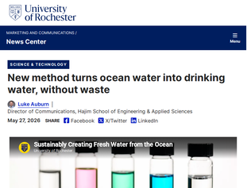
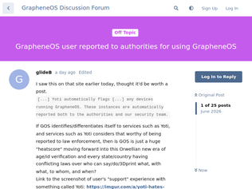
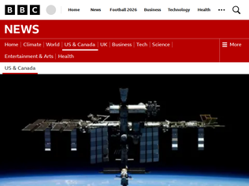
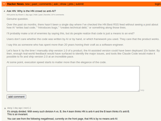
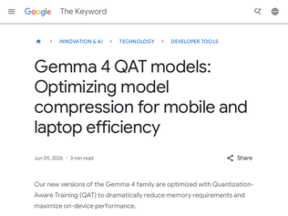
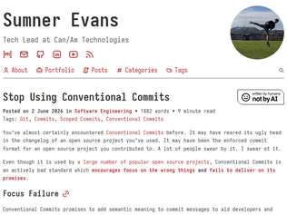

"Big relief for me. As a passive investor, I want the indices to follow the same passive strategy they always have, and specifically not make exceptions for specific companies like SpaceX wanted.Plenty of ways to get exposure to that stock without it going into the indices it is not qualified for."
"Letting new stocks marinate in the market and get 4 quarters of SEC filings along with following all the GAAP accounting practices will definitely help evaluate them before inclusion. The last large boom/bust cycle had a couple of companies, at least, that were doing illegal things. I'm not stating that these three are, just that nobody knows and the process should play out.I do wonder if any of these three companies are using AI to do their accounting and bookkeeping. What happens when there are AI hallucinations affecting those outcomes?"
"Yep!! Respect to them. I was planning to move to an equal weight index but this gives me a little more time to evaluate options."
"> "The tool itself worked properly and functioned as intended; however due to a bug in a separate code path, the system did not properly verify that the email address provided by the individual requesting a password reset matched the email address associated with that user’s Instagram account," said Meta in its breach notice.I'm not sure "worked properly" and "as intended" accurately describe this situation."
""Meta notified at least 20,225 people that their accounts had been compromised. [...]The compromises allowed the hackers to take over the person's entire Instagram and any linked accounts, including obtaining contact information, dates of birth, and profile information, as well as the ability to access the person's posts, direct messages, and account activity [...]the hacks began around April 17 and lasted until this week [...]"This is staggering."
"Meanwhile an account I created for a new product was permanently disabled by an automated system with no path for me to appeal to a human.(If anyone at Meta/Instagram sees this I wrote a brief blog post with the details. Please help! https://addisonwebb.com/blog/2026-06-05-Can%20Someone%20at%2... )"

"There is a fundamental minimum amount of energy needed to desalinate: you can't take less energy to do it,than you could gain back (from osmotic pressure) if you allowed the desalinated water to expand a cylinder containing the residual brine. This is large. This paper is a thermal method, so it doesn't have an electricity input, but to justify their efficiency claim, they should really compare against what you could do by using the same surface area for solar panels, driving a conventional setup. My (limited) understanding is that conventional reverse osmosis is not far from the theoretical optimum, energy-wise, the main difficulties being operational (the membranes need declogging). And of course RO is more expensive than rain.This paper is interesting, however, in directly producing crystalline salt, which is lower volume than brine and easier to dispose of, maybe even valuable."
"The paper: [1]They're still at lab scale in glass. They haven't built a usable system, even a small one. The big claim here is that it doesn't clog; capillary action moves the salt out of the active area to another area, where some yet to be developed mechanism removes it. That needs to be demonstrated. If they can come up with something that runs for years without clogging or replacing the active material, that's a real advance.Laser surface preparation is known.[2] It's useful for roughening smooth surfaces in a very structured way, in preparation for painting. The result is a smooth paint surface. If you sandblast to roughen, the first paint layer is somewhat irregular. Then you need to sand and paint again to get a smooth surface. Laser roughening has been tried for auto painting, but didn't go mainstream. A good question here is whether commercial laser surface prep systems can make the material this new process uses.[1] https://www.nature.com/articles/s41377-026-02315-4[2] https://www.youtube.com/watch?v=BKYOglHYo_Y"
"This appears to be the same New Rochester article as 4 days ago with 20 comments.https://news.ycombinator.com/item?id=48349507"
"They are surrounded by a murderous imperialist religion that is currently purging the remains of all other minorities. The only "ally" they have halfway around the world is split in half, one half abadoning the values the alliance builds on, the other in full blown denial of all reality not fitting into some utopian messianic vision. Man, i would send spies to the ISS to, if i was on a spacewalk and some maniacs in the airlock started a fight on how to cut my lifeline.."
"I don't think I've ever seen in all of my wide understanding of history, such a tiny state successfully make an empire its vassal. Truly an astounding feat. It would be highly entertaining if it didn't bode poorly for humanity."
"Don't miss the attempt of the removal of Section 224 of the US NDAA at the same time, a polarizing development in discussions on Israel, to put it mildly.https://www.aipac.org/memos/america-israel-defense-ndaa-224https://www.militarytimes.com/news/pentagon-congress/2026/06...https://responsiblestatecraft.org/us-israel-military-congres..."

"The OP of this reddit post has a lot of other posts (now hidden) about age verification, bypassing it, and privacy. They even got called out about this in the reddit thread and responded by hiding their profile, but you can see it on google still if you google for “reddit PaiDuck”Not saying what this company did is right, but it feels like this guy has been testing how far he can push these various age verification companies with bypass attempts, and as a result got banned. Additionally the email response from the company could have been trivially edited before the screenshot was taken, so I’m not even convinced that the story is real. If I was running an age verification company I would absolutely not share with the banned users the reason we caught them, that’s like sharing the recipe for your secret sauce."
"OI mate, you got a loicense for that operating system?The only surprising thing about this story is that the user didn't get a visit by the police to be charged with a "non-crime cybersecurity incident". The UK has become such a shithole."
"I'm done for once the authorities know I have an account on HACKER News."

"I found this interesting: NASA RELL (Robotic External Leak Detector) [1]. "NASA’s Robotic External Leak Locator (RELL) is a robotic, remote-controlled tool that helps mission operators detect the location of an external leak and rapidly confirm a successful repair. … Two instruments working in sync give RELL its ammonia-detecting superpowers. … Mass spectrometer & Ion vacuum pressure gauge" [1] (PDF fact sheet from NASA) https://www.nasa.gov/wp-content/uploads/2023/10/rell-factshe..."
"> After multiple inspections and sealant applications, Nasa reported in January that pressure readings suggested a stable configuration had been reached - though there remained uncertainty about whether the leak had truly been sealed or whether air was simply escaping elsewhere.I'm clearly not understanding what they're trying to say here. If _one_ leak was sealed, but the air was "escaping elsewhere", it would still be a leak, causing pressure readings to drop."
"Maybe someone who knows more about the ISS than I do can answer this:Naively, I would assume that there are airlocks between the different sections of the ISS. I would also assume that they would close these airlocks while doing the kind of work they are doing to repair the leaks.So, assuming I'm right (and my assumptions might be wrong,) why do the astronauts need to shelter?"
"[dupe] Discussion: https://news.ycombinator.com/item?id=48417490"

"It's simply divided. With every such division A vs. B, the A team thinks HN is anti-A and the B team thinks it's anti-B. This is an invariant.You can see from the following megathread, currently on the front page, that HN is by no means anti-AI:Ask HN: What was your "oh shit" moment with GenAI? - https://news.ycombinator.com/item?id=48406174.Sometimes it just takes the right initial condition (e.g. title) to bring out one side or other.As for why the community is divided, there's always a temptation to come up with HN-specific explanations, but society as a whole is divided about AI. Surely that is the only explanation one needs. As I've been saying for years, HN can't be immune from macro trends: https://hn.algolia.com/?dateRange=all&page=0&prefix=true&que..."
"Because I enjoy writing code. I enjoy being paid for writing code. And I don't enjoy writing prompts for AI.Code is not just a means to an end. Code is a means to my happiness. Users might not care, but I do care. I love good code. I feel great when I can write good code.I won't say that I don't care about users. I do. But I care about me, first and foremost. And AI threatens to remove my lifestyle and workstyle. That's why I'm bullish against it. And at the same time I use it, because I feel forced to use it. This is rat race.At the same time I can say that I don't care about delivering product 10x faster. Actually I'd prefer to deliver product 0.1x faster.Yes, I understand that contradicts to the business side of view. Well, I don't care. I'm not getting paid percentage of product sales. I'm getting paid flat salary and I care about keeping it and live good life in the process.I'm being completely honest about it. Maybe it'll help someone to understand that point of view."
"I call these AI tools "proprietary non-determenistic database of the free internet". They belong to american companies which can cut off your access if american government doesn't like your country's government. They fed from the free internet that many of us grew up in, store it in humans unreadable form and sell you access to it. If some day claude starts to spit out compiled binaries instead of code nobody will notice, and we'll essentially get proprietary cloud-hosted compiler that most in the world depends on to build software. With built-in telemetry and backdoors and clause in license that allow full overtake of your business if provider wants it ofc. It's a great shift from the internet we all know and love towards the new subscription-based access to world's propriatary knowledge base. It's a perfect "mind control" tool as well - you don't need USAID, "free media" and stuff like that in other countries when all people there including politicians ask chatgpt everything from meaning of life to recipies of pancakes. Once you see these political and philosophical dimensions it's hard to unsee how claudecode running on my PC won't turn into a weapon some day. But in blissful ignorance it's fun to use, and companies love it for the promise of replacing people. Amen"

"I just ran one of these locally on a Mac like this: uvx litert-lm run \ --from-huggingface-repo=litert-community/gemma-4-E2B-it-litert-lm \ gemma-4-E2B-it.litertlm \ --backend=gpu \ --prompt="Generate an SVG of a pelican riding a bicycle" The first time you run that it downloads 3.2GB to ~/.cache/huggingface/hub/models--litert-community--gemma-4-E2B-it-litert-lmIt can handle audio and image input too, which is pretty cool for a 3.2GB model. For images: uvx litert-lm run \ --from-huggingface-repo=litert-community/gemma-4-E2B-it-litert-lm \ gemma-4-E2B-it.litertlm \ --backend=gpu --vision-backend gpu \ --attachment image.jpg --prompt describe And for audio: uvx litert-lm run \ --from-huggingface-repo=litert-community/gemma-4-E2B-it-litert-lm \ gemma-4-E2B-it.litertlm \ --backend=gpu --audio-backend cpu \ --attachment audio.wav --prompt transcribe (The pelican is rubbish, but it's only a 3.2GB file so the fact it even outputs valid SVG is impressive to me: https://gist.github.com/simonw/94b318afde4b1ce5ff67d4b5d0362... )"
"Unsloth's collection as well [0], with their results [1]. Looks like they can get very close to 100% accuracy compared to the BF16 model that is unquantized, and Unsloth's quants are better than the original Google's QAT as posted in the article.Personal I'm using the 2B model for web search and structured JSON output back via Unsloth Studio and its API, works very well for that even with the model embedded on phones.[0] https://huggingface.co/collections/unsloth/gemma-4-qat[1] https://unsloth.ai/docs/models/gemma-4/qat#qat-analysis"
"It’s the Friday before WWDC during which Apple is going to announce an “improved” Siri based on Google models (a locked partnership, for now). Maybe it’s a coincidence, but this might be Google releasing models that will be showcased next week by Apple?No knowledge, just speculation."

"As programmers I feel like we'll always nitpick and bitch over what the optimal setup is for rather mundane things (tabs v spaces, yada yada).I'm not saying that conventional commits are God's given best way to structure a commit message, but they are a defined structure, and I find it much more effective and important that some expectations be set around commit messages, and I think conventional commits are as good as anything.Like the author is making a big deal that they think scope is more important than type. I may tend to agree, but I think the difference between "fix(compiler)" and "compiler fix" is not exactly a hill I'd be willing to die on.The tech industry has tons of things that became standards even if they weren't optimal. E.g. if one were starting from scratch I think any sane person would argue JSON should support comments (sorry but Douglas Crawford's rationale for not including comments never made sense to me), better defined numeric formats, etc. But it was better in many contexts than what came before it, so it became the standard. I could believe that there is some other format that differs a bit from conventional commits that is a little better, but not really better enough to want a whole other competing way of structuring comments."
"The real takeaway is that different projects have different requirements.In over 30 years of using source control, I've never once worked on something where it's useful to include the component (article calls it scope) in the description in a standardised way. It's obvious what components are affected based on where in the source tree the affected files are. Similarly "bug", "fix" or "feature" adds no useful value. It's important or it wouldn't be checked in.The only thing I've found useful, and which the article doesn't even consider, is a link / id for the relevant change request. The commit already contains all the information about what was done in the change, what's missing is the context about why.Even on my solo projects I include a JIRA reference in square brackets before the description. If it's just something I randomly decided to fix during the course of development, I'll create a short 1 line JIRA to get an id and explain the why there."
"The use of the word "chore" in many users of conventional commits has always riled me. I've always tended to favour the "linux kernel"[0] style of commit subject, which thankfully gets a mention here.[0] https://www.kernel.org/doc/html/v7.0/process/submitting-patc..."
S&P 500 rejects SpaceX, also blocking entry for OpenAI and Anthropic
"Big relief for me. As a passive investor, I want the indices to follow the same passive strategy they always have, and specifically not make exceptions for specific companies like SpaceX wanted.Plenty of ways to get exposure to that stock without it going into the indices it is not qualified for."
"Letting new stocks marinate in the market and get 4 quarters of SEC filings along with following all the GAAP accounting practices will definitely help evaluate them before inclusion. The last large boom/bust cycle had a couple of companies, at least, that were doing illegal things. I'm not stating that these three are, just that nobody knows and the process should play out.I do wonder if any of these three companies are using AI to do their accounting and bookkeeping. What happens when there are AI hallucinations affecting those outcomes?"
"Yep!! Respect to them. I was planning to move to an equal weight index but this gives me a little more time to evaluate options."